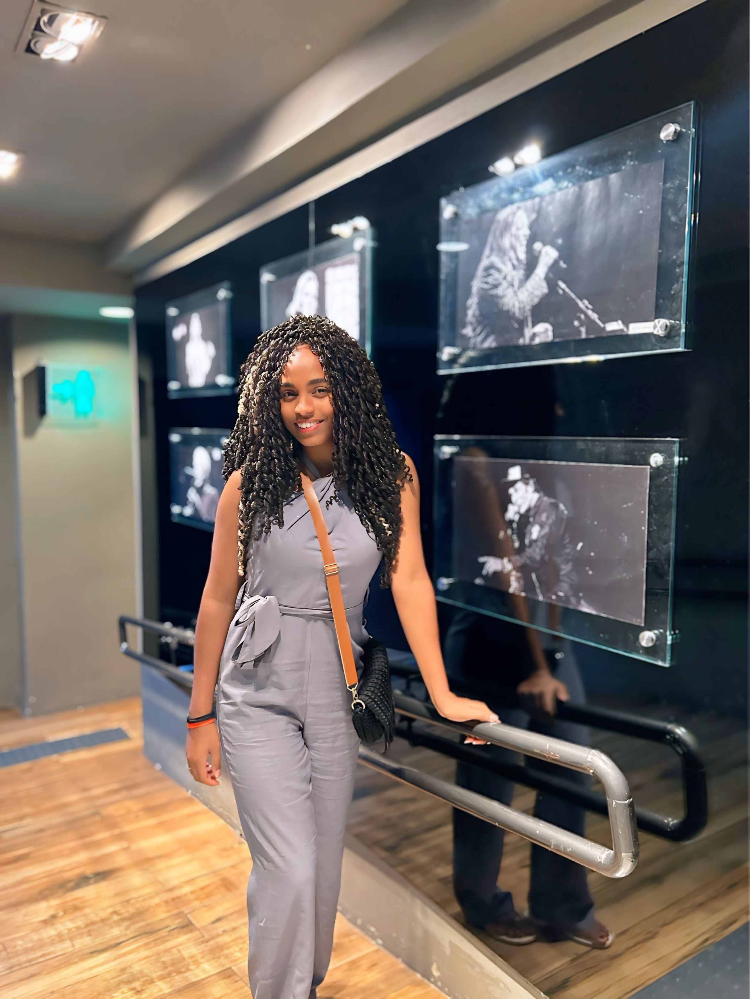

← Todos os projetos
01 · Portfólios
Portfólio Jackeline Costa
Sistema editorial para apresentar uma trajetória multidisciplinar em design, administração, cultura e gestão de projetos.
- Período
- 2026
- Status
- Em evolução
- Função
- Estratégia de conteúdo, direção visual e Product Design

02 · Visão geral
O que é o projeto
Reestruturação do portfólio profissional para reunir projetos, processo e trajetória em uma experiência única.
03 · Contexto e problema
A necessidade
Problema
A atuação multidisciplinar precisava ser comunicada com clareza sem fragmentar design, gestão, comunicação e identidade.
Objetivo
Construir uma presença digital flexível, acessível e preparada para crescer com novos estudos de caso.
05 · Processo
Como o trabalho avançou
- Auditoria de conteúdo
- Definição de arquitetura
- Sistema visual
- Prototipação
- Implementação e validação
07 · Resultado
O que foi entregue ou aprendido
Entregas
- Arquitetura multipágina
- Modelo de dados de projetos
- Design responsivo
- Componentes acessíveis
Competências aplicadas
- Product Design
- Estratégia
- Arquitetura da informação
- Acessibilidade
- Inteligência artificial aplicada
08 · Galeria e documentação
Materiais do projeto
Visualização aberta das telas e do PDF original para consulta completa.